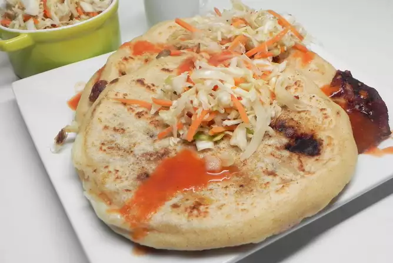

Pupusas

This is a fairly authentic version of the popular Salvadorean dish. It does take some time, however it is well
worth
the effort! You can purchase pre-made chicharron at specialty markets, however this recipe tastes just like it. I
also make the salsa roja and curtido ahead of time the salsa freezes very well, and the curtido can stay in the
fridge at least a week.
A popular food in El Salvador. A thick corn tortilla filled with cheese and easy to customize. Serve topped with
curtido picked cabbage or eat plain. My ex-boyfriend's Salvadorean mother's recipe!
Ingridients
chicharron
- 1 and 12 ounce packages bacon, to taste
- 4 tomatoes,halved
- 1 green bell pepper, seeded and quartered
- 1 cup granted Monterey Jack cheese
- 2 cloves garlic, minced
- Salt to taste
- 4 cups masa harina or more to taste
- 2 cups water, or as needed
- half cup vegetable oil for frying
Steps
- Combine tomato sauce, water, cilantro, green bell pepper, onion, crushed garlic, bouillon cube, and salt in a
saucepan over medium-low heat. Cook and stir until vegetables are soft, about 20 minutes. Let salsa roja cool for
10 minutes.
- Fill a blender halfway with the salsa roja. Cover and hold lid down with a potholder; pulse a few times before
leaving on to blend. Pour into a bowl. Repeat with remaining salsa roja. Return to saucepan and simmer for 10
minutes more stirring occasionally. Allow to cool completely, about 1 hour, and refrigerate.
- Place cabbage and carrots in a large bowl. Add 4 cups boiling water and let stand for 5 minutes. Drain well. Mix
in vinegar, scallions, oregano, and red pepper flakes. Chill curtido until serving.
- Place bacon in a large skillet and cook over medium-high heat, turning occasionally, until almost fully cooked
and not yet crispy, 5 to 7 minutes. Transfer bacon and grease (if desired) to a food processor. Add tomatoes,
quartered green bell pepper, Monterey Jack cheese, and minced garlic. Puree and season the chicharron with salt.
- Mix masa harina and 1/2 cup water together in a bowl by hand. Add the remaining water slowly, about 2
tablespoons at a time, mixing well after each addition, until dough is moist but still firm. Cover with a wet
towel.
- Heat 1/2 cup oil a large skillet over medium-high heat.
- Take a golf ball-sized piece of dough and roll into a ball in your hands. Make a hole in the dough ball with
your thumb; put a small amount of chicharron inside the hole, close it up, and flatten the ball with your hands
into a thick tortilla shape. Place pupusa in the skillet and fry until golden brown, about 2 minutes per side.
Repeat with the remaining dough and chicharron.
- Serve each pupusa topped with 2 tablespoons of curtido and 1 tablespoon of salsa roja.